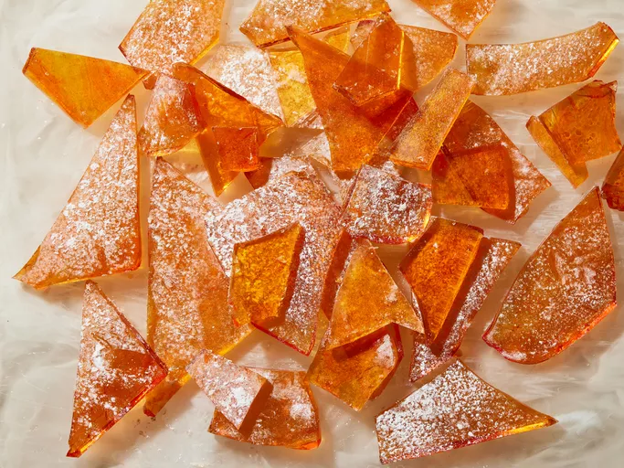

Hard Candy
Home
Description
Hard candy is a type of confectionery that is made by boiling sugar syrup to a high temperature until it reaches
the hard crack stage. This results in a solid, brittle candy that can be flavored and colored in various ways.
Hard candies are often enjoyed for their long-lasting sweetness and satisfying crunch.

Ingredients
- cooking spray
- 3 ¾ cups white sugar
- 1 ½ cups light corn syrup
- 1 cup water
- 1 tablespoon orange, or other flavored extract
- ½ teaspoon food coloring (Optional)
- ¼ cup confectioners' sugar for dusting
Directions
- Grease a cookie sheet with cooking spray.
- Stir white sugar, corn syrup, and water together in a medium saucepan. Cook, stirring, over medium heat
until sugar dissolves, then bring to a boil.
- Without stirring, heat to 300 to 310 degrees F (149 to 154 degrees C), or until a small amount of syrup
dropped into cold water forms hard, brittle threads.
- Remove from the heat and stir in flavored extract and food coloring. Pour onto the prepared cookie sheet.
Dust top with confectioners' sugar.
-
Let cool until hardened, about 15 minutes. Break into about 36 pieces and store in an airtight container.
-
Enjoy!